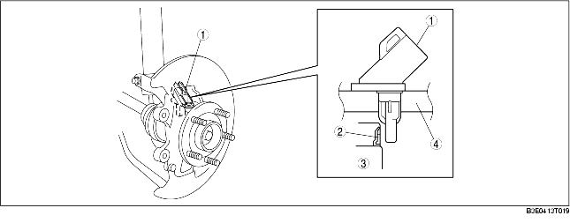
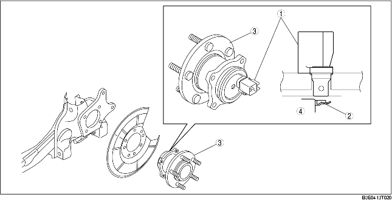
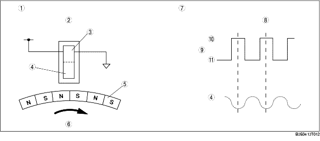

• The ABS wheel speed sensor utilizes a semi-conductor element that contains an active drive circuit (MR element*). The front sensor is installed on the steering knuckle and the rear sensor is installed on the rear wheel hub component.
• The ABS sensor rotor utilizes a magnetic encoder system that functions with magnetic rubber, and is integrated into the wheel hub component. Therefore, if there is any malfunction of the ABS sensor rotor, replace the wheel hub component.
*: A magneto-resistive force means that an exterior magnetic field acts on the element, changing the resistance of the element.

.
|
1
|
Front ABS wheel-speed sensor
|
|
2
|
Front ABS sensor rotor
|
|
3
|
Wheel bearing (vehicle inner side)
|
|
4
|
Steering knuckle
|
Rear ABS wheel-speed sensor and sensor rotor

.
• As the ABS sensor rotor rotates, the magnetic flux between the ABS wheel speed sensor and the ABS sensor rotor change periodically. This periodic change is in proportion to the rotation speed.
• The semiconductor element in the wheel speed sensor detects the change in magnetic flux, and the active drive circuit converts it to a rectangular wave signal for the current, which is transmitted to the ABS HU/CM.
• For every single rotation of the ABS sensor rotor, 44 rectangular wave pulse signals are output. The CM in the ABS HU/CM calculates the wheel speed from the periodicity of these pulses.

.